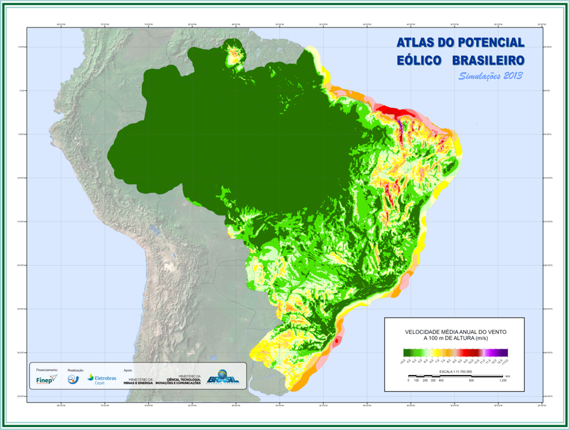

A empresa não cumpriu nada dos acordos feitos junto a comunidade.
Informações em Destaque
Energia Eólica
A energia eólica consiste na utilização da energia cinética dos ventos para movimentar aerogeradores, que convertem esse movimento em eletricidade. O processo ocorre a partir do deslocamento do ar, que aciona as pás instaladas no rotor. Essas pás, geralmente construídas em materiais leves e resistentes, como fibra de vidro ou carbono, giram com a ação do vento e transmitem o movimento ao rotor central.
O rotor está conectado a um eixo principal (ou eixo de baixa rotação), que conduz a energia mecânica gerada pelo movimento das pás até a caixa multiplicadora de velocidade. Esse componente tem a função de aumentar a velocidade de rotação, elevando-a de dezenas para milhares de rotações por minuto, valor necessário para o funcionamento adequado do gerador.
A seguir, a rotação é transferida para o gerador elétrico, que transforma a energia mecânica em energia elétrica. O gerador, assim como outros equipamentos do sistema, está abrigado na nacele, compartimento localizado no topo da torre. Dentro da nacele encontram-se também sistemas de controle, de resfriamento, o freio mecânico e mecanismos de orientação.
A torre é a estrutura de sustentação de todo o conjunto, podendo ser de aço tubular ou concreto armado, com alturas que variam geralmente entre 80 e 150 metros. Internamente, a torre contém escadas ou elevadores de manutenção e cabos que conduzem a energia até a base. No topo, sobre a nacela, estão instalados instrumentos como o anemômetro e a veleta, responsáveis por medir a velocidade e a direção dos ventos. Esses dados alimentam o sistema de orientação, conhecido como yaw system (sistema de guinada), que gira a nacela para posicionar as pás de forma adequada em relação ao vento.
Uma vez produzida, a energia elétrica é conduzida por cabos até a base da torre, onde se encontra a subestação de transformação.
A inserção da Energia Eólica no Brasil
A energia eólica tem se destacado como uma das principais alternativas renováveis de geração elétrica no contexto da transição energética global. No Brasil, sua inserção na matriz elétrica ocorre em um cenário de busca por diversificação das fontes energéticas e mitigação da dependência da geração hidrelétrica. A literatura especializada aponta que a consolidação da energia eólica no país é resultado de uma combinação de fatores políticos, institucionais, econômicos e tecnológicos.
A crise de racionamento energético de 2001 revelou fragilidades estruturais do sistema elétrico brasileiro, motivando a formulação de políticas públicas voltadas à expansão de fontes renováveis. Nesse contexto, foi criado o programa PROEÓLICA, que, apesar de representar uma iniciativa pioneira, não alcançou seus objetivos devido à escassez de fornecedores nacionais e à ausência de regulamentações adequadas para o setor.
Em substituição ao PROEÓLICA, foi instituído o Programa de Incentivo às Fontes Alternativas de Energia Elétrica (PROINFA), por meio da Lei nº 10.438/2002, com o objetivo de fomentar a energia eólica, a biomassa e as pequenas centrais hidrelétricas (PCHs). A primeira fase do programa previa a contratação de 3.300 MW, sendo 1.100 MW destinados a cada uma das fontes, com incentivos como tarifas diferenciadas e linhas de crédito subsidiadas do BNDES. Entretanto, dificuldades relacionadas à nacionalização de equipamentos, ao financiamento de projetos e à estruturação de empreendimentos acarretaram atrasos e resultados aquém das metas iniciais.
A segunda fase do PROINFA passou a operar sob o Novo Modelo do Setor Elétrico, instituído pela Lei nº 10.848/2004, que introduziu os leilões públicos como mecanismo de contratação de energia. Nessa nova configuração, os projetos de energia eólica passaram a competir por preço, o que resultou em uma expansão significativa da fonte a custos mais competitivos. Os contratos estabelecidos nos leilões foram especialmente adaptados à natureza intermitente da geração eólica, prevendo mecanismos de compensação baseados na produção média, o que contribuiu para a redução dos riscos percebidos pelos investidores.
A elaboração do Atlas do Potencial Eólico Brasileiro pelo CEPEL (2001), que estimou em 143 gigawatt (GW) a potência tecnicamente aproveitável do Brasil, para a altura de 50 metros (altura suficiente para as tecnologias dos aerogeradores da época), foi um importante marco para o desenvolvimento do setor eólico brasileiro. Mas a partir dos novos estudos e medições realizadas, foi possível reavaliar a capacidade de geração de eletricidade no país a partir da fonte eólica e classificá-la como superior a 300 GW ou 920 TWh (terawattora) ao ano (figura 1). Dentre as regiões brasileiras, destaca-se a região Nordeste pelo maior potencial eólico do país, calculado em 75 GW, seguido pelas demais regiões: Sudeste (29,7 GW), Sul (22,8 GW), Norte (12,8 GW) e Centro-Oeste (3,1 GW).
Os avanços tecnológicos também contribuíram para tornar o processo mais competitivo no Brasil. As torres mais altas, passando de 50 metros para os 100 a 120 metros, permitiram captar ventos mais velozes. Ao mesmo tempo, a potência das máquinas triplicou para 3 megawatts (MW) e os geradores mais eficientes reduziram o custo da energia eólica, fazendo com que a eólica seja a segunda energia mais barata no país, só atrás da hidrelétrica.
No estado da Bahia, destaca-se o semiárido baiano, como uma das áreas com maior potencial eólico do Brasil. Parte significativa do melhor potencial eólico do estado se encontra nas elevações da área central, formada por serras e chapadas. Nessas localidades são observadas ocorrências de extensas áreas de grande altitude com relevo e rugosidade bastante favoráveis, além de indicadores biológicos de atividade eólica constante: vegetação com crescimento inclinado, pela ação contínua dos ventos ao longo dos anos (AMARANTE et al, 2001). Na Chapada Diamantina, por exemplo, destacam-se os municípios de Novo Horizonte, Piatã, Ibitiara e Brotas de Macaúbas; na Serra do Espinhaço, os municípios de Caetité, Guanambi, Igaporã, Pindaí, Urandi, Licínio de Almeida e Jacaraci; outras áreas também são consideradas de elevado potencial, como Serra do Estreito, Azul, Açuruã e do Tombador, além das áreas que envolvem os municípios de Sobradinho, Sento Sé, Casa Nova e Morro do Chapéu.

Fonte: CEPEL, 2017, p. 21.
A competitividade da energia eólica no Brasil deve-se, em grande parte, ao elevado fator de capacidade dos projetos, que ultrapassa 40% em alguns casos – valor superior à média mundial. Ademais, há uma relevante complementaridade entre a geração eólica e a hidrelétrica, o que contribui para a segurança e estabilidade do sistema elétrico nacional. O desenvolvimento de uma cadeia industrial nacional, com a exigência de conteúdo local para acesso a financiamentos, impulsionou a instalação de fábricas de aerogeradores, pás e torres eólicas no país (VEIGA, 2012).
Em função dessa elevada competitividade, a fonte eólica tem aumentado paulatinamente sua participação na matriz elétrica do Brasil. O crescimento consistente apresentado por essa fonte permitiu que o país saísse de menos de 1 GW em 2010 para os 33,73 GW em 2024, completamente conectados à rede de transmissão.
Com base na tabela 1, é possível acompanhar a evolução da matriz elétrica do país por fonte de 2020 a 2024. Em comparação com as outras fontes, a eólica já ocupa a segunda posição na geração de energia no país (ABEEÓLICA, 2024). O período em que a capacidade de geração da energia eólica no Brasil aumentou de forma significativa foi a partir de 2014, quando entraram em operação vários parques eólicos.
| Fontes | 2020 | 2021 | 2022 | 2023 | 2024 | |||||
|---|---|---|---|---|---|---|---|---|---|---|
| Cap. GW | % | Cap. GW | % | Cap. GW | % | Cap. GW | % | Cap. GW | % | |
| Hidrelétrica | 103,03 | 58,8 | 103 | 56,4 | 103,2 | 54,1 | 103,2 | 51,6 | 103,2 | 49,4 |
| Eólica | 17,73 | 10,1 | 21,6 | 11,8 | 25,6 | 13,4 | 30,45 | 15,2 | 33,73 | 16,1 |
| Biomassa | 15,23 | 8,7 | 16,2 | 8,9 | 16,5 | 8,7 | 16,73 | 8,4 | 17,06 | 8,2 |
| Fotovoltaica | 3,29 | 1,9 | 4,6 | 2,5 | 7,2 | 3,8 | 11,5 | 5,7 | 16,6 | 7,9 |
| PCH e CGH | 6,26 | 3,6 | 6,4 | 3,5 | 6,5 | 3,4 | 6,67 | 3,3 | 6,7 | 3,2 |
| Gás natural | 14,95 | 8,5 | 16,3 | 8,9 | 17,4 | 9,1 | 17,95 | 9 | 17,81 | 8,5 |
| Petróleo | 9,01 | 5,1 | 8,9 | 4,9 | 8,5 | 4,4 | 7,92 | 4 | 8,13 | 3,9 |
| Carvão | 3,58 | 2 | 3,6 | 2 | 3,6 | 1,9 | 3,46 | 1,7 | 3,46 | 1,7 |
| Nuclear | 1,99 | 1,1 | 1,99 | 1,1 | 1,99 | 1,0 | 1,99 | 1,0 | 1,99 | 1,0 |
| Fonte: Abeeólica - Boletim de dados – 2020; 2021; 2022; 2023; 2024; Números ABeeólica, Maio/2024. | ||||||||||
Análise do Parque Eólico em Foco
O Complexo Eólico Serra das Almas, atualmente em processo de implantação pela EDF Renewables Brasil, está situado na região sudoeste do estado da Bahia, nos municípios de Urandi, Licínio de Almeida e Jacaraci. O empreendimento faz parte da estratégia da empresa em ampliar sua participação no setor de energia renovável no país, inserindo-se no contexto mais amplo de crescimento da matriz elétrica nacional baseada em fontes alternativas, como a energia eólica. A região onde o complexo está sendo construído é caracterizada por relevo predominantemente ondulado, clima semiárido com longos períodos de estiagem e vegetação de transição entre caatinga e cerrado, condições que favorecem o aproveitamento do potencial eólico da área.
A escolha dos locais para a instalação dos aerogeradores considerou, entre outros fatores, a disponibilidade de áreas amplas com características topográficas adequadas, a regularidade dos ventos, a viabilidade de acesso por meio de vias de transporte e a possibilidade de conexão com o sistema elétrico nacional. Essas condições foram avaliadas previamente por meio de estudos técnicos conduzidos pela empresa responsável.
O empreendimento está inserido em uma região com baixa densidade demográfica e predominância de áreas rurais. Os municípios envolvidos, como Urandi e Licínio de Almeida, apresentam indicadores socioeconômicos diversos, com parte significativa da população vivendo em áreas com infraestrutura básica limitada.
A EDF Renewables Brasil é uma empresa do grupo francês EDF (Électricité de France), com atuação no desenvolvimento, construção e operação de projetos de energia renovável no Brasil. A implantação do Complexo Serra das Almas representa uma das iniciativas mais recentes da empresa no setor eólico nacional. De acordo com informações divulgadas publicamente, o complexo visa contribuir para o aumento da capacidade de geração de energia elétrica renovável no país, sem que isso implique, neste momento, qualquer análise acerca de seus efeitos colaterais ou benefícios socioambientais.
Considerando o estágio atual de desenvolvimento do projeto e os dados técnicos divulgados até o momento, é possível observar que o Complexo Eólico Serra das Almas foi estruturado com base em um modelo de distribuição territorial que busca otimizar o uso dos ventos disponíveis na região. A uniformidade na capacidade das unidades geradoras (todas com 4.500 kW) e a distribuição equilibrada da potência instalada entre os parques reforçam uma abordagem padronizada na implementação dos aerogeradores, o que pode facilitar tanto a manutenção futura quanto a operação integrada do sistema.
Impactos do Parque Eolico nos municípios pesquisados
Embora a energia eólica seja considerada uma fonte limpa e renovável, sua implantação em territórios com fragilidades sociais, ambientais e estruturais, como os municípios de Urandi, Licínio de Almeida e Jacaraci, tem gerado impactos significativos, especialmente quando não acompanhada por planejamento ambiental adequado e medidas eficazes de mitigação.
No caso do Complexo Eólico Serra das Almas, instalado nesses três municípios do sudoeste baiano, os impactos fora registrados de forma mais aguda em Urandi, cuja população enfrentou limitações no acesso à água potável, infraestrutura básica e serviços públicos. Um dos principais efeitos verificados foi o assoreamento e a contaminação de corpos hídricos, especialmente da barragem do rio Cabeceiras Raiz, principal fonte de abastecimento hídrico do município. Durante o período de chuvas intensas ocorrido no final de 2023, a movimentação de solo nas áreas em obra, associada à supressão da vegetação e à compactação da terra para instalação dos aerogeradores, resultou no escoamento de sedimentos para os corpos d’água. Esse processo reduziu a qualidade da água, tornando-a barrenta e imprópria para consumo humano, o que levou à interrupção do abastecimento e à decretação de situação de calamidade pública.
A supressão de vegetação nativa do bioma Caatinga e de áreas de transição para o Cerrado, necessária para a construção das estruturas e estradas de acesso, acarretou a fragmentação de habitats naturais, afugentamento da fauna silvestre e perda de biodiversidade. A vegetação da região tem papel central na regulação hídrica e na conservação dos solos, sendo sua retirada diretamente ligada ao aumento da erosão e à diminuição da capacidade do solo em absorver água. Esse quadro é agravado pelas características do solo local, predominantemente raso e com baixa permeabilidade, o que favorece o escoamento superficial e potencializa os processos erosivos em áreas já desmatadas.
Outros impactos ambientais associados ao empreendimento incluem a compactação e impermeabilização do solo, necessárias para a instalação dos aerogeradores, mas que reduzem a recarga de aquíferos e contribuem para o aumento da velocidade do escoamento de águas pluviais. Também foram identificados riscos de contaminação por resíduos, como óleos lubrificantes e combustíveis utilizados na operação de maquinários pesados.
No meio antrópico, observou-se a sobrecarga dos serviços públicos de saúde e infraestrutura. A chegada de trabalhadores de fora do município durante a fase de obras elevou a demanda por atendimento médico e abastecimento de água, especialmente em localidades já deficitárias nesses aspectos. Adicionalmente, moradores relataram aumento de doenças respiratórias e dermatológicas em função da poeira gerada pelas obras e pelo tráfego intenso de veículos pesados nas estradas vicinais. A emissão de poeira foi um fator agravante para populações mais vulneráveis, como crianças e idosos, que passaram a conviver com desconfortos respiratórios frequentes.
Relatos também indicam frustração por parte das comunidades locais quanto ao não cumprimento de compromissos assumidos pela empresa responsável. Programas de capacitação e compensações sociais foram considerados insuficientes ou descolados da realidade e das necessidades da população atingida, o que tem gerado tensões e críticas ao processo de implantação do parque.
Dados Gerais Coletados
Os dados apresentados nesta seção foram coletados com moradores impactados das cidades estudadas, por meio de formulários sobre os impactos do parque eólico em suas comunidades.
Você faz parte de qual município?
48 respostas
Quais são as fontes de energia utilizadas pela família em sua casa?
48 respostas
SANEAMENTO BÁSICO - URANDI
Qual é a fonte de abastecimento de água:
29 respostas
Essa água é tratada?
29 respostas
Depois das chuvas intensas e assoreamento da barragem, vocês observaram alguma alteração na qualidade da água?
29 respostas
Depois da elevação da quantidade de lama na água da barragem, como foram abastecidos? A empresa ou o município forneceu algum tipo de ajuda?
29 respostas
Com a elevação da lama da barragem, sua comunidade enfrentou problemas de saúde relacionados ao consumo de água?
29 respostas
SANEAMENTO BÁSICO - JACARACI E LICÍNIO DE ALMEIDA
Qual é a fonte de abastecimento de água:
19 respostas
Essa água é tratada?
19 respostas
Depois das chuvas intensas e assoreamento da barragem, vocês observaram alguma alteração na qualidade da água?
19 respostas
Depois da elevação da quantidade de lama na água da barragem, como foram abastecidos? A empresa ou o município forneceu algum tipo de ajuda?
19 respostas
Com a elevação da lama da barragem, sua comunidade enfrentou problemas de saúde relacionados ao consumo de água?
19 respostas
IMPLANTAÇÃO DO PARQUE EÓLICO NA COMUNIDADE
Você participou de alguma audiência pública sobre a instalação dos parques eólicos?
48 respostas
Qual a sua opinião acerca do visual dos parques eólicos?
48 respostas
Os moradores mais próximos dos parques eólicos já reclamaram do barulho?
48 respostas
A implantação dos parques eólicos trouxe algum dano ao meio ambiente local?
48 respostas
A implantação dos parques eólicos trouxe benefícios para a comunidade ou para o município?
48 respostas
A alteração da paisagem para a implementação das torres eólicas, modificou o modo de vida da comunidade?
48 respostas
Na sua opinião, o processo de desmatamento para abertura de estradas e implantação da base do aerogerador causou algum impacto na rede hidrográfica local?
48 respostas
Relatos dos moradores
Tem que fiscalizar a nossa nascente porque quando chove, a nossa água fica barrenta, com muita lama.
O parque eólico trouxe muitos benefícios para o município, e danos também no meio ambiente.
Acredito que poderia ter sido feito um estudo ou um planejamento da região e dos rios que passam perto antes de ter feito o estrago
Precisa de mais audiências públicas para explicar melhor os benefícios e prejuízos... Essas chegam e constroem só pensando no lucro e deixam grandes problemas para a população.
Mapas e Localização da Área
Visualização cartográfica da área de estudo para compreender a distribuição dos parques e a área de influência dos empreendimentos sobre os municípios e suas comunidades.
.jpg)
{kind=link}
{kind=link}
{kind=link}
{kind=link}
.jpg)
.jpg)
Galeria de Fotos e Vídeos
{kind=link}
{kind=link}
{kind=link}
{kind=link}
{kind=link}
{kind=link}
{kind=link}
{kind=link}
{kind=link}
{kind=link}
Entre em Contato
Entre em contato conosco para esclarecer dúvidas, obter informações detalhadas sobre a pesquisa ou compartilhar sua experiência relacionada ao Parque Eólico Serra das Almas.
Endereço
Instituto Federal de Educação, Ciência e Tecnologia Baiano
Campus Guanambi
Zona Rural - Distrito de Ceraíma
Bahia - CEP: 46430-000